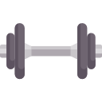

 BIENFAITS DU SPORT POUR LA SANTE
Si le sport sur ordonnance est entré dans la loi française, ce n’est pas pour rien.
Le sport présente réellement des bénéfices pour notre santé.
Ces bénéfices sont autant physiques que mentaux. Le sport ne permet pas uniquement de perdre du poids mais aussi par exemple de récupérer une certaine mobilité articulaire ou encore de l’autonomie.
Le sport permet par ailleurs de réduire les risques de maladies cardio-vasculaires ou encore d’éviter l’obésité et le diabète.
Pratiquer une activité sportive peut être intéressante au niveau personnel mais aussi professionnel.
En effet, beaucoup d’entreprises commencent à comprendre l’importance du sport en entreprise pour les collaborateurs. Véritable pause dans la journée de travail, le sport en entreprise a un impact conséquent sur les collaborateurs.
- Augmenter sa productivité
- Améliorer la cohésion d’équipe
- Se vider l’esprit
- Se détendre
- Diminuer son stress
- Améliorer sa concentration